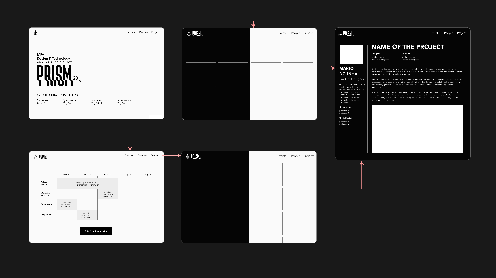
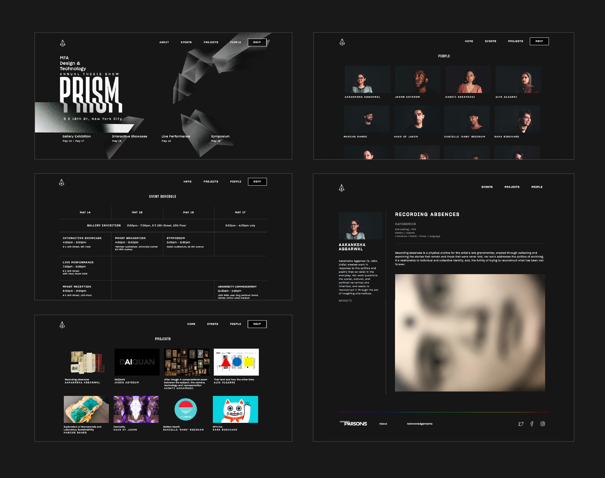

Project
Services
Year
Parsons School of Design
Web Development
2019
MFADT Prism is a website consisting a summary of the projects of all the students from the year 2019. We, the web team of four, had a drive to make it better than our senior's thesis website so we were invested on making website look fun, interactive and informational while leaning closer to the theme, Prism.
Focusing primarily on viewing the website as an events
page for the users to rsvp for the program as well as
browse through the student's work to be displayed at the
show.
The important informations to be displayed on
the site were: Schedule, Venue, Students and Student's
Thesis Projects

Entire site is coded from scratch with html, css and js. The interactive part in the landing page is made with p5.js
